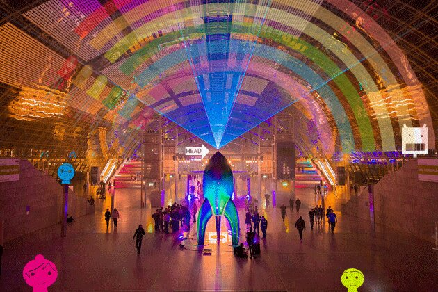

A fairytale. Not. ¯\_(ツ)_/¯
Reflection of the 36th Chaos Communication Congress
in relation to fediverse.party and ActivityPub
ActivityPub @ “!decentral” assembly, fediverse.party and komona @ 36c3
[ Warning: my reflection of magic is, what suspicious internet users call a “Long Read” 
Also: It is opinionated which could confuse them or which some others may even hate.
Only haters MUST read this as a manifesto. ]
Feedback is very much appreciated here, especially at fediverse.party where two sessions ran in parallel and all CCC-human-splitter devices were in use. So it would be nice if anybody of the other group could summarise its content …
tl;dr
If you eager to get the takeouts in a nutshell, simply watch out for the next post …
You can watch some of the 36c3 talks here
2019-12-23T23:00:00Z , 51°23’53.0"N 12°24’09.8"E …
Each year at Christmas Eve
hundreds of angels, faeries and wizards appear in “Leipzig” on PLANET “earth”,
Together they build a city for 17.000 inhabitants for their yearly congress on how to share magic amongst each other.

Leaving the dimension “Time” – welcome #36c3
CC BY-SA 3.0 by Freddy2001 from Wikimedia Commons
Some on the planet call them “hackers”.
Some circumstances on “earth” can’t hinder them.
Neither can the exact allocation of physical or digital space to only a few inhabitants of the planet.
However - they are only allowed to build on private properties at the planet and because they are angels they respect that at the moment.
Although it is quite unfair that due to these physical limit all the tickets the godmothers have generated are gone within some seconds.
36C3: “Resource exhaustion”
Because the planet on which they hold their meeting each year is in real danger and the people in certain parts are dying due to fairy tales of economic growth.
So following the good old tradition of creating | awareness* they begin to save it as a second task.
Well, and there are some crazy dictators which are located in the greater landmasses known as “the other parts” and there is North East Syria and many problems these angels, faeries and wizards solve for this planet in one week.
But off course, kids : You can also build a smartwatch here and do Art against Facebook.
btw – The carbon footprint of the Congress
*[disclaimer : I lost all the stuff (cameras) due to climate change here and so needed 1 of 5 days to deal only with the “Resource exhaustion” focus and not with AP…]
Conf Takeout 0
Encouraging Multi Language Use of the protocol implementations is one of the most important tasks.
We arrived at the spot at early Christmas Evening.
During the days sleeping at the minimal constraint but comfortable in the eMails people van  in front of hall 2 .
in front of hall 2 .
While setting up some ramps during the first days I got a slight incidence with a load bicycle but no worries, the CERT solved it under the tacit assumption and without problems. The sun of the kahuna (the old medicine man) appeared. While the krakens applied their magic hands, the side effect is that you could talk with them about what the congress proves beneath : That certain ministers on the planet wants to produce certain people aka “The Public” made from solid glas.
After komona domes were set some mountain trolls mixed in and the magic started :
We had our !decentral assembly table together with delta.chat near our neighbours digitalcourage and near to other fediverse protocols and diaspora at the end of the row.
Apart from speaking the kids could play with an awesome UX and light …
Within the broader area were Scuttlebutt (install party, hot shit !) and SNAC, the seed exchange, food hacking base and the other rockers between the OIO and Chaos Zone stages.
Michal Kučerák who is responsible for the Prague locations where AP Conf and rwot9 took place was the official congress coffee champion also located there and many kids played in komonas giant soup plate (ball pit) …
“hall 2” : I could name a 1.000 things more there now and so I might write another follow-up …
—- advertising
a special thank you from the author to some core angels
be excellent to each other – komona
—-
Day 1
It began by creating ActivityPub awareness face to face amongst the 17.000 and going to the other assemblies – in general it was amazing what happens when you look into the eyes of each other. And : Many other projects like Sonar or catnet.rocks showed up at the assembly.
Then I went to the about:freedom cluster (close to heaven) to look for meeting-money …
I am confident now that we get the kickstart budget for a next conference.
Be it in Catalunya or virtual.
Politicians of the pirates and lefts and an obscure mic eating goose passed me several times on wheels and the Greens showed up in person (will write to all later).
Some played in camouflage suits

Seen on the way : “Field Trip” – and interactive film on Tempelhof by Tagesspiegel
First Conf Takeout :
Interruptions are as good as Interventions.
On day 2 we did several sessions within the assembly
about
- journalism workflows
- low energy consumption, certifying Blauer Engel and
- search / search with trust
I will reflect these separately later.
And btw: I am proud that I could not make it to the talk of Moxie Marlinspike on centralised solutions. I would have wished that he also could make a talk on the the Kurds situation because actual he knows much about it.
Feel free to read the certain federated reflections on the talk by other users …
Second Conf Takeout :
Challenges remain in the fields of privacy (webfinger), trust (OCAP), discovery and porting friends collections (between instances) …
Faeries and wizards are loud. Always try to get a Lecture Room which is reserved by the goblins for silence.
Apart from that needed a few time for XR and North East Syria now with some journo-colleagues.
Day 3 was awesome and pure magic. fediverse.party, sessions
Located some faces of the Prague ActivityPub Conference first.
It really shined with fediverse.party at 12 o’clock in the mindsetting Lecture Room 11.
I’m sorry that I arrived some minutes later due to an extra cigarette with people.
Everybody introduced their handles.
We named it #fediverse36c3 and the diversity of instances shined through :
I want to summarise the sessions of the group I was in here ( apart from that I could not manage to steno all id, for the sake of DSGVO anonymised [and opionated] ) :
Session : Let us create more awareness for the fediverse.
Activity. Now. Pub.
My major takeout was again to tackle the clear distinction between end users, fediverse admins, implementors and multiplicators (such as journalists, media organisations, NGOs etc.)
First dispatch in the session of a dozen appearances was to raise the question
How to tackle: “ I am to lazy to join the fediverse because there is nobody I know.
There are already many ‘guides’ but they don’t work. ”
comments ???
My personal advice: Fear is good.
“Take care of me in the silent waters cause in the troubled waters I can take care of myself.”, a venezuelean Yanomama once in the wood.
We talked a bit on wording also between sessions
- “ActivityPub” for implementers et. al
- “Fediverse” is helpful for end users
- For multiplicators the metagoblins gave us the task to explain the difference
(and varying on the actor types also the intersection and dissection) between :
“mastodon”, “ActivityPub”, “Fediverse” …
The second comment led directly to the “Keep things fun” :
Who should we encourage to install instances:
- local associations, clubs, pubs, NGOs
we identified tags that are related like #momentum and #xr
We were encouraged to use mobilizon for events.
And maybe let’s create local groups for word spreaders and install parties …
Peertube needs help in mirroring important CC content which includes conference and science – See also 09:45
Then we thought about “campaigning” and the first argument was
- placards and billboards
Why do we need them ?
Instead of targeting proprietary platforms maybe creating illusions we should target the inhabitants of the planet.- a takeout from one session at assembly later: Due to tobacco ad ban many public billboards in Europe become empty.
We could start in https://github.com/sebilasse/activitypub-origami where I put all the content of APconf as CC0 … I could also create a private repo in /redaktor first …
Then we talked on broader awareness.
??? Who wants to communicate with other movements against an Internet of companies.
Let’s together recreate the Internet of Protocols and Trust.
We compared the situation of Internet vs. the phone network :
“We don’t have to use three devices of three different providers”
And we closed the session with an important unsolved issue :
How can we take our friends with us between the different fediverse layers and how can we create a better web experience “between” the softwares.
Additional I felt a demand for better use of C2S to allow different, diverse clients to connect to a server.
[ 2nd session TODO – summarize HERE ]
Third Conf Takeout :
Maybes are good and the fediverse means diversity.
…
“Ist das System relevant ?”
Fourth Conf Takeout :
Perfect place to connect with the movements for climate justice !
—- advertising
< hambiBleibt >
STOPPT BRAUNKOHLE
< /hambiBleibt >
—-
The day (and night ;) of the third day of the goods continued with
a talk by one of the redaktor committers on search by trust and some loose ideas from talks at the assembly –
OTHER DEMANDS:
- OFFDEM Now! and what in the summer ?
We need to make clear now how to organise OFFDEM and the summer conference.
Ok, it is “virtual” but another idea is now to connect local “clusters” of anarchist hackerspaces and .local instance admins (would love to co-organise) and I would then like to organize something at the Barça and Perpinyà for a reason.
- PEOPLE NEED the TESTS
They want to do “clients”, have C2S support and bring it on, this was my perception.
Other talks were very intense then and I might write about it later maybe.
And now sorry for the break: Myself and all participants needed a fat36 angel feeding. We talked about some opportunities of what .orgs could act as an european “overcoat” for funding for the protocol.
Then we headed over to interested scientists to answer some questions because a book on the fediverse is quite a good idea and I thought about the questions answered by different views and perspectives.
So delta.chat, friendica, ActivityPub, XR instance admin and users “were there”.
We talked about being content-intensive not reach-intensive and a lot of fun and about bridges (the opposite of a Wall) and a bit about alternative facts.
Again it became pretty clear that the world of the fediverse and ActivityPub has this important humanistic aspect: Diversity
Be it different types of software or components.
Be it city, region or local pub instances.
Be it the world of sexworkers, queer communities or furbies or whatsoever.
Another takeout was, that it is very personally, friend-caring and about topics.
The developer community was especially named as “face-to-face”, “individual” …
The science session continued with talking about our favourite UX patterns and games. Somewhen in-between we talked about birds.
However the consensus became to continue this discussion in a closed group where we would add @how and Chris and who requests it (maybe) …
About “transition phases”
Generally there is no time (and in insecure Wifi also no consistent location) but the unicorns create transition phases (intransitive activities, phases you want to write about later but also they are asynchronous and happen anywhere in the sequential order)
The ribbon allows free public transport but this needed to be fast.
I quickly needed to drive an ensemble of genies in a bottle to the city cause they needed access to a physical key. Before arriving the angels sent us music to the radio device.
Alexa, CCC Ballet and the other robots were awesome.
Then /me and the goblins were finally allowed to dance.
Trolled all the signs that e.g.
Comic Sans is a government surveillance font
with real alternative facts like “Trump Font is greater !!! (!)”
Our coffee machine was Lost&Found.
—- advertising
autocrypt and mate
—-
Day 4 - funding
Crepes, Avocados, coffee, bread with amazing vegan fusion and coffee. And coffee.
[disclaimer: redaktor applied as well but was not founded : ]
Attended the talk of Director of Strategy at NLnet, NGI Zero Lead and W3C liaison officer.
See the video
Michiel Leenaars gave an extensive overview of the founded projects as well as about how to apply.
Many familiar names appeared on the NGI Zero screen. Leenars reported on the founded projects such as Chris’ spritely, Tom Marble, indieweb, delta.chat, XMPP, Tor ….
Let us all thank Mr. Leenars now (08:05) :
The very special extra section about ActivityPub was pretty informative featuring
pixelfed, funkwhale, spritely, discourse, librecast, pixelfed, openEngiadini
and more
ActivityPub came in a surrounding flavour and taste of The Green Web Foundation and ipfs
If you apply :
“about trust is important”
My advice for your fediverse heartproject is
-
If you need money : See the video and Apply …
-
If you may need money or just started thinking :
See the lists of grants I prepared -
If you don’t have a fediverse heartproject for the new decade :
If you are having thoughts of centralisation or dream of walled gardens, call the National Suicide Prevention Lifeline at 1-800-273-8255 (TALK) or Telefonseelsorge.
You can find a list of additional resources at http://activitypub.rocks resources.
In the last evening the very tired goblins made an error by mixing up the cables for the big dance area and the Cocktail Bar dance area.
But that is really forgivable.
And so we sticked to Gin Sul* Tonic shouting Bella CIAO CIAO CIAO.
*and some I forgot, I will raise an issue at the cocktail bar.
Now please don’t blame me that the angels gave us so many tasks !
Day 5
Friends
End
After 6 days in total days removing all the things and entering any planet time again …
Need to carry all the things so burning fossile fuel …
Approx. 42km away at the Gas station :
On the tap somebody placed a fortune cookie snippet :
“Once the well is empty water gets its true value”
Epilogue
Some words remain unsaid for now : I would encourage CCC / chaos.social more to say instead of “ask questions on mastodon” e.g. “ask questions on the fediverse, for example mastodon or another ActivityPub Software” …
 Happy New federated, decentralized Decade !
Happy New federated, decentralized Decade !
Rock on, keep it fun and save the planet,
Best Sebastian – Happy New Year.
@sl007@mastodon.social
—- testimonial
The Leipziger Messe GmbH is the best Event management company and we were impressed with our guestroom as well as our location and amenities. Staff will be equally pleased to learn of our kind remarks. No occupational accident since Kevin left.
I would just say 6 out of 5 stars !!! (!)
—-
And so in the name of Mother Gaja and the Lord : Follow Back. Amen.
[ Respect to all anti-nazi fighters ]